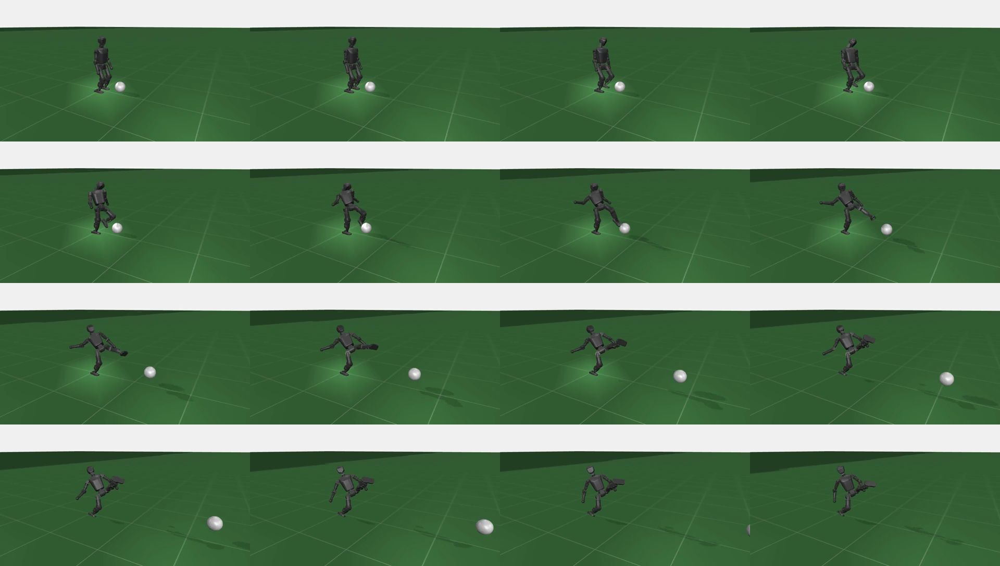
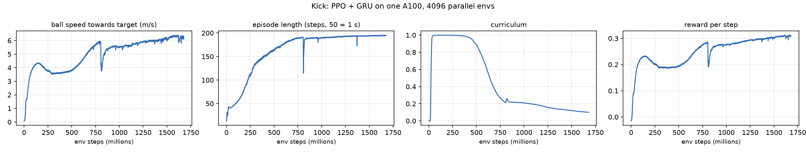
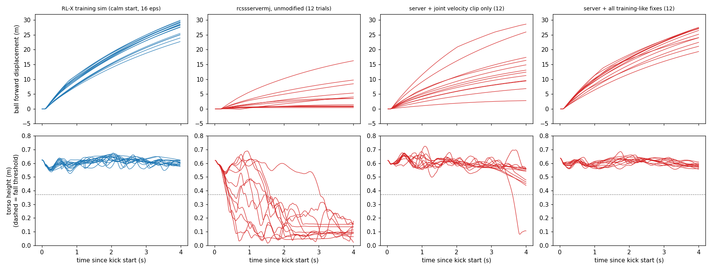

A kick policy: PPO with a GRU memory, in RL-X
RL-X (Nico Bohlinger's JAX library) is what the shipped walk policy was trained with. I started from its RoboCup locomotion environment and made a kick environment: same robot, same action interface, plus a ball, a kick reward and a success rule.
Action to target angle (PD control) training/RL-X/rl_x/environments/custom_mujoco/robocup_soccer/kick/mjx/control_functions/pd.py:10
10 def process_action(self, action, internal_state): 11 scaled_action = action * internal_state["scaling_factor"] 12 target_joint_positions = internal_state["actuator_joint_nominal_positions"] + scaled_action 13 noisy_target_joint_positions = target_joint_positions + internal_state["position_offsets"] 14 15 return noisy_target_joint_positions
What the policy sees vs what the critic sees training/RL-X/rl_x/environments/custom_mujoco/robocup_soccer/kick/mjx/environment.py:591
591 self.policy_observation_indices = jnp.concatenate([ 592 self.joint_positions_obs_idx, 593 self.joint_velocities_obs_idx, 594 self.joint_previous_actions_obs_idx, 595 self.imu_angular_vel_obs_idx, 596 self.goal_velocities_obs_idx, 597 self.gait_phase_obs_idx, 598 self.gravity_vector_obs_idx, 599 self.policy_exteroception_obs_idx, 600 self.ball_obs_idx, 601 ], dtype=int) 602 603 self.critic_observation_indices = jnp.concatenate([ 604 self.joint_positions_obs_idx, 605 self.joint_velocities_obs_idx, 606 self.joint_previous_actions_obs_idx, 607 self.feet_ground_contact_obs_idx, 608 self.feet_time_on_ground_obs_idx, 609 self.feet_time_in_air_obs_idx, 610 self.imu_linear_vel_obs_idx, 611 self.imu_angular_vel_obs_idx, 612 self.goal_velocities_obs_idx, 613 self.gait_phase_obs_idx, 614 self.gravity_vector_obs_idx, 615 self.critic_exteroception_obs_idx, 616 self.ball_obs_idx, 617 ], dtype=int)
The critic (which only exists during training, to judge how good a state is) sees extra information the policy does not: foot contacts, body velocity, height over ground. This is usually called a privileged or asymmetric critic.
Reward: what counts as good
| Term | Per second | Why |
|---|---|---|
| Ball speed toward the target | 3 × speed (capped at 6 m/s) | the actual goal: kick it hard, in the right direction |
| Closest foot near the ball (until the ball moves) | 1 × exp(−distance / 0.2 m) | helps it find the ball early in training |
| Alive | 0.5 | falling ends the episode, so staying up pays |
| Upright | 0.5 × uprightness | stay balanced |
| Penalties | action change, joint speed, torque, joint limits | smooth, motor-friendly motion |
Kick reward, every step training/RL-X/rl_x/environments/custom_mujoco/robocup_soccer/kick/mjx/reward_functions/kick.py:62
62 def reward_and_info(self, data, mjx_model, internal_state, action, info): 63 ball_pos = data.qpos[self.env.ball_qpos_adr:self.env.ball_qpos_adr + 3] 64 ball_vel = data.qvel[self.env.ball_qvel_adr:self.env.ball_qvel_adr + 3] 65 66 # Ball speed towards the target (only forward motion counts), clipped so one lucky bounce can't dominate 67 ball_speed_to_target = jnp.dot(ball_vel[:2], self.env.kick_target_direction[:2]) 68 ball_velocity_reward = self.ball_velocity_coeff * jnp.clip(ball_speed_to_target, 0.0, self.ball_velocity_clip) 69 70 # Approach: closest foot near the ball, only while the ball hasn't been kicked yet 71 feet_pos = data.geom_xpos[self.env.foot_geom_indices] 72 closest_foot_distance = jnp.min(jnp.linalg.norm(feet_pos[:, :2] - ball_pos[None, :2], axis=-1)) 73 ball_still = jnp.linalg.norm(ball_vel[:2]) < self.ball_moving_threshold 74 foot_to_ball_reward = ball_still * self.foot_to_ball_coeff * jnp.exp(-closest_foot_distance / self.foot_to_ball_scale) 75 76 # Stay up 77 imu_xmat = data.site_xmat[self.env.imu_site_id].reshape(3, 3) 78 uprightness = imu_xmat[2, 2] 79 alive_reward = self.alive_coeff * 1.0 80 upright_reward = self.upright_coeff * jnp.clip(uprightness, 0.0, 1.0) 81 82 # Regularisers 83 joint_pos = data.qpos[self.env.actuator_joint_mask_qpos] 84 joint_vel = data.qvel[self.env.actuator_joint_mask_qvel] 85 action_rate_reward = self.action_rate_coeff * -jnp.mean(jnp.square(action - internal_state["last_action"])) 86 joint_velocity_reward = self.joint_velocity_coeff * -jnp.mean(jnp.square(joint_vel)) 87 force_capacity = jnp.abs(mjx_model.actuator_forcerange).max(axis=1) 88 force_capacity = jnp.where(force_capacity > 0.0, force_capacity, 1.0) 89 torque_reward = self.joint_torque_coeff * -jnp.mean(jnp.square(data.qfrc_actuator[self.env.actuator_joint_mask_qvel] / force_capacity)) 90 limits = internal_state["joint_position_limits"][self.env.actuator_joint_mask_joints - 1] 91 out_of_limits = -jnp.minimum(joint_pos - limits[:, 0], 0.0) + jnp.maximum(joint_pos - limits[:, 1], 0.0)
Reward coefficients training/RL-X/rl_x/environments/custom_mujoco/robocup_soccer/kick/mjx/default_config.py:132
132 "type": "kick", 133 # --- kick reward (reward_functions/kick.py) --- 134 "ball_velocity_coeff": 3.0, 135 "ball_velocity_clip": 6.0, 136 "foot_to_ball_coeff": 1.0, 137 "foot_to_ball_scale": 0.2, 138 "ball_moving_threshold": 0.3, 139 "kick_alive_coeff": 0.5, 140 "kick_upright_coeff": 0.5,
How it practises
4-second episodes. The robot starts standing, the ball at rest 0.2-0.45 m ahead and up to 0.2 m to the side. 4,096 robots in parallel on one A100 (~75,000 steps/s); v2 trained for ~1.7 billion steps. A curriculum makes the start messier (tilts, joint offsets, body velocity, action delay) as the robot succeeds.
Episode start: ball placement training/RL-X/rl_x/environments/custom_mujoco/robocup_soccer/kick/mjx/domain_randomization/initial_state_functions/random.py:66
66 # kick: ball in front of the robot (robot faces +x), at rest 67 ball_keys = jax.random.split(keys[0], 2) 68 ball_x = jax.random.uniform(ball_keys[0], minval=0.2, maxval=0.45) 69 ball_y = jax.random.uniform(ball_keys[1], minval=-0.2, maxval=0.2) 70 a = self.env.ball_qpos_adr 71 qpos = qpos.at[a:a + 7].set(jnp.array([ball_x, ball_y, self.env.ball_radius, 1.0, 0.0, 0.0, 0.0])) 72 qvel = qvel.at[self.env.ball_qvel_adr:self.env.ball_qvel_adr + 6].set(0.0)
PPO in one paragraph
Collect a batch of attempts from all robots. For every action, work out whether it turned out better or worse than the critic expected (the advantage, computed with GAE). Nudge the policy toward the better-than-expected actions, but clip the step so the new policy cannot move too far from the old one in one update. Repeat.
Advantages (GAE) training/RL-X/rl_x/algorithms/ppo_gru/flax_full_jit/ppo_gru.py:169
169 def calculate_gae_advantages(critic_state, next_states, rewards, values, terminations): 170 def compute_advantages(carry, t): 171 prev_advantage = carry[0] 172 advantage = delta[t] + self.gamma * self.gae_lambda * (1 - terminations[t]) * prev_advantage 173 return (advantage,), advantage 174 175 next_values = self.critic.apply(critic_state.params, next_states).squeeze(-1) 176 delta = rewards + self.gamma * next_values * (1.0 - terminations) - values 177 init_advantages = delta[-1] 178 _, advantages = jax.lax.scan(compute_advantages, (init_advantages,), jnp.arange(self.nr_steps - 2, -1, -1)) 179 advantages = jnp.concatenate([advantages[::-1], jnp.array([init_advantages])]) 180 returns = advantages + values
PPO clipped loss training/RL-X/rl_x/algorithms/ppo_gru/flax_full_jit/ppo_gru.py:187
187 def loss_fn(policy_params, critic_params, state_seq, action_seq, log_prob_seq, return_seq, advantage_seq, done_seq, init_carry): 188 # Policy loss 189 action_mean, action_logstd = self.policy.apply(policy_params, state_seq, done_seq, init_carry, method=self.policy.forward_sequence) 190 action_std = jnp.exp(action_logstd) 191 new_log_prob = -0.5 * ((action_seq - action_mean) / action_std) ** 2 - 0.5 * jnp.log(2.0 * jnp.pi) - action_logstd 192 new_log_prob = new_log_prob.sum(-1) 193 entropy = action_logstd + 0.5 * jnp.log(2.0 * jnp.pi * jnp.e) 194 195 logratio = new_log_prob - log_prob_seq 196 ratio = jnp.exp(logratio) 197 approx_kl_div = (ratio - 1) - logratio 198 clip_fraction = jnp.float32((jnp.abs(ratio - 1) > self.clip_range)) 199 200 pg_loss1 = -advantage_seq * ratio 201 pg_loss2 = -advantage_seq * jnp.clip(ratio, 1 - self.clip_range, 1 + self.clip_range) 202 pg_loss = jnp.maximum(pg_loss1, pg_loss2) 203 204 entropy_loss = entropy.sum(-1) 205 206 # Critic loss 207 new_value = self.critic.apply(critic_params, state_seq).squeeze(-1) 208 critic_loss = 0.5 * (new_value - return_seq) ** 2
Near perfect from calm starts, fragile from messy ones
| RL-X training sim, 64 episodes | Kicked | Fell | Distance (median) | Peak ball speed | Off target |
|---|---|---|---|---|---|
| Calm starts (what it trained on) | 64/64 | 0/64 | 28 m | 15 m/s | 1.6° |
| Messy starts (full randomisation) | 61/64 | 45/64 | 13 m | 8 m/s | 10.6° |


Bug I found: the curriculum never moved
The old success rule only counted a kick if the ball travelled 1 to 15 m. A good kick goes ~28 m, so almost every good kick counted as a failure and the curriculum stayed at 0.10: it never practised messy starts. New rule: ball ≥ 1 m forward and the robot survives the whole episode, no cap. With it the curriculum climbed from 0 to 0.85 in 20 minutes of training.
Success rule + curriculum (fixed version) training/RL-X/rl_x/environments/custom_mujoco/robocup_soccer/kick/mjx/environment.py:365
365 # kick: an episode succeeds if the ball travelled >= 1 m towards the target AND the robot lasted the whole 366 # episode (falls and physics blow-ups terminate early). v2 also capped travel at 15 m, but a good kick goes 367 # ~28 m in 4 s, so nearly every real kick counted as a failure and the curriculum never advanced (stuck ~0.1). 368 ball_travel = jnp.dot(state.data.qpos[self.ball_qpos_adr:self.ball_qpos_adr + 2] - new_state.internal_state["ball_start_xy"], self.kick_target_direction[:2]) 369 survived = new_state.info_episode_store["episode_step"] >= self.horizon - 1 370 episode_success = jnp.isfinite(ball_travel) & (ball_travel >= 1.0) & survived 371 new_state.internal_state["ball_start_xy"] = qpos[self.ball_qpos_adr:self.ball_qpos_adr + 2] 372 new_state.internal_state["env_curriculum_levels_in_a_row"] = jnp.where(episode_success, 373 jnp.where(new_state.internal_state["env_curriculum_levels_in_a_row"] >= 0, 374 new_state.internal_state["env_curriculum_levels_in_a_row"] + 1, 375 1 376 ), 377 jnp.where(new_state.internal_state["env_curriculum_levels_in_a_row"] < 0, 378 new_state.internal_state["env_curriculum_levels_in_a_row"] - 1, 379 -1 380 ) 381 ) 382 new_state.internal_state["env_curriculum_coeff"] = jnp.clip(new_state.internal_state["env_curriculum_coeff"] + new_state.internal_state["env_curriculum_levels_in_a_row"] / self.env_curriculum_nr_levels, 0.0, 1.0)
Test tool: the unmodified rcssservermj, 12 fixed setups
The policy is exported from JAX to PyTorch (checked to match to 4e-6), a client builds exactly the training observation from the server's messages, and the server runs unmodified. Every test uses the same 12 ball placements, and the true ball and robot positions are logged every cycle.
Server client: building the observation from server messages experiments/kick_server/kick_trials.py:218
218 def proprio(self, d, goal): 219 """The 82 locomotion values, identical to the training env / nn_client (order + scaling).""" 220 jp = (d['q'] - NOMINAL) / 3.14 221 jv = d['dq'] / 100.0 222 pa = self.prev / 10.0 223 av = np.clip(d['gyr'] / 50.0, -1.0, 1.0) 224 ph = self._wrap(self.phase + self.phase_dt) 225 gait = np.concatenate([np.sin(ph), np.cos(ph)]) 226 grav = rot_of(d['quat']).inv().apply([0.0, 0.0, -1.0]) 227 return np.concatenate([jp, jv, pa, av, goal, gait, grav]).astype(np.float32) 228 229 def act(self, obs): 230 obs = np.clip(np.nan_to_num(obs, nan=0.0, posinf=0.0, neginf=0.0), -10.0, 10.0).astype(np.float32) 231 with torch.no_grad(): 232 a, self.h = self.net(torch.from_numpy(obs).unsqueeze(0), self.h) 233 a = a.squeeze(0).numpy().astype(np.float32) 234 self.prev = a 235 self.phase = self._wrap(self.phase + self.phase_dt).astype(np.float32) 236 return a, obs 237 238 239 MAXVEL = np.array([12.56, 12.56, 18.84, 18.84, 18.84, 18.84, 18.84, 18.84, 18.84, 18.84, 10.88,

Switch on one training-sim difference at a time
| Changed inside the server (diagnosis only) | Kicked | Fell | Distance |
|---|---|---|---|
| nothing (the real server) | 8/12 | 12/12 | 3.5 m |
| only the joint velocity clip | 12/12 | 1/12 | 12.7 m |
| everything except the velocity clip | 8/12 | 11/12 | 1.8 m |
| everything except the ball model | 12/12 | 6/12 | 17.3 m |
| everything except foot contact | 12/12 | 0/12 | 22.4 m |
| all six differences | 12/12 | 0/12 | 25.8 m |
One control step: delay, PD, physics, the velocity clip training/RL-X/rl_x/environments/custom_mujoco/robocup_soccer/kick/mjx/environment.py:427
427 def _step(self, state, action): 428 key, domain_randomization_key, command_sampling_key, command_key, observation_key, terrain_key = jax.random.split(state.key, 6) 429 state = state.replace(key=key) 430 431 chosen_action = action[:self.nr_actuator_joints] 432 delayed_actions = self.domain_randomization_action_delay_function.delay_action(chosen_action, state.internal_state) 433 434 data, _ = jax.lax.scan( 435 f=lambda data, delayed_action: (mjx.step(state.mjx_model, data.replace(ctrl=self.control_function.process_action(delayed_action, state.internal_state))), None), 436 init=state.data, 437 xs=delayed_actions, 438 unroll=True 439 ) 440 # Non-physical: resets joint speeds to the motor limits after every control step. The competition server has 441 # no such clip, and kick v2 learned to lean on it (falls 12/12 in the server, experiments/kick_server/README.md). 442 if self.env_config.get("clip_joint_velocities", True): 443 max_qvel = 100 * jnp.ones(self.initial_mj_model.nv) 444 max_qvel = max_qvel.at[self.actuator_joint_mask_qvel].set(state.internal_state["actuator_joint_max_velocities"]) 445 data = data.replace(qvel=jnp.clip(data.qvel, -max_qvel, max_qvel)) 446 447 state.internal_state["imu_orientation_rotation"] = Rotation.from_matrix(data.site_xmat[self.imu_site_id].reshape(3, 3))
Ablation: adding the training clip to the server experiments/kick_server/ablations.py:130
130 def clip_velocities(sim): 131 """RL-X kick _step(): qvel clipped to the actuator max velocities (actuated joints) and to 100 elsewhere.""" 132 d = sim.mj_data 133 pre = agent_prefix(sim) 134 for name, vmax in zip(JOINT_ORDER, MAXVEL): 135 j = d.joint(pre + name) 136 j.qvel[0] = float(np.clip(j.qvel[0], -vmax, vmax)) 137 root = d.joint(pre + 'root') 138 root.qvel[:] = np.clip(root.qvel, -100, 100) 139 b = d.joint('ball-root') 140 b.qvel[:] = np.clip(b.qvel, -100, 100) 141 return np.array([d.joint(pre + n).qvel[0] for n in JOINT_ORDER])
Training ball vs the server ball training/RL-X/rl_x/environments/custom_mujoco/robocup_soccer/kick/mjx/environment.py:52
52 if env_config.get("server_ball", False): 53 # the competition server's ball (rcssservermj soccer/ball_5.xml): lighter, more rolling resistance, stiff contact 54 ball.add("geom", name="ball", type="sphere", size=f"{self.ball_radius}", mass="0.43", contype="1", conaffinity="1", 55 condim="6", friction="0.4 0.01 0.01", priority="1", solref="-5000 -20", rgba="1 1 1 1") 56 else: 57 ball.add("geom", name="ball", type="sphere", size=f"{self.ball_radius}", mass="0.45", contype="1", conaffinity="1", 58 condim="6", friction="0.7 0.005 0.005", rgba="1 1 1 1") 59 home_key = xml_handle.find("key", "home")
The same clip is in the get-up and walk envs. The shipped walk survives in the server because walking is gentle and rarely reaches the limits.
Retrain without the clip, with the server ball, then with match delay
| In the unmodified server, 12 trials | v2 | v4 (no clip + server ball) | v5 (+ 20 ms delay) |
|---|---|---|---|
| True ball, no delay | 12/12 falls · 3.5 m | 0/12 falls · 20.1 m | 0/12 falls · 16.9 m |
| True ball, match timing (+20 ms) | 12/12 falls · 1.9 m | 12/12 falls · 1.8 m | 1/12 falls · 20.3 m · 12.3 m/s · 3.3° |
| Camera ball, match timing | 12/12 falls · 5.0 m | 12/12 falls · 4.0 m | 10/12 falls · 13.5 m |
v4 = 25 min of fine-tuning from v2 on a laptop CPU; v5 = v4 + ~2.5 h with the delay always on (~6M steps total, about 200× less than a GPU run). Every checkpoint was tested in the server: v4 kept training and got worse (5/12 falls), so the best snapshot was kept, not the last.
Action delay grows with the curriculum training/RL-X/rl_x/environments/custom_mujoco/robocup_soccer/kick/mjx/domain_randomization/action_delay_functions/default.py:25
25 def sample(self, internal_state, should_randomize, key): 26 effective_max_delay_substeps = self.min_delay_substeps + jnp.floor(internal_state["env_curriculum_coeff"] * (self.max_delay_substeps - self.min_delay_substeps)).astype(jnp.int32) 27 sampled_delay_steps = jax.random.randint(key, (), self.min_delay_substeps, effective_max_delay_substeps + 1) 28 internal_state["action_delay_steps"] = jnp.where(should_randomize, sampled_delay_steps, internal_state["action_delay_steps"])
Stuck at kneeling
| RL-X get-up, 64 episodes of 10 s | Standing at the end |
|---|---|
| From near-upright starts | 64/64 |
| From lying | 0/64 |
It reaches sitting/kneeling and stops: sitting already earns height reward, and standing up needs a forceful, risky motion. Plan if I continue mine: always start fallen, two-stage reward (HumanUP, arXiv 2502.12152), no velocity clip. A GPU run of that is training now.
Make the kick usable in a full team, or drop it with data
- Train with a camera-like ball (noise, 25 Hz, ball lost after contact).
- Start episodes from the walk policy's stopping poses, not a perfect standing pose.
- Train on the GPU (kick v5 job running now on an A100).
- Compare kicks on the test tool (same 12 setups: speed, accuracy, falls, time to kick) and keep whichever wins in each situation.
- Use the test tool on team problems: falls per match, measuring the tactics layer over many matches.
Questions: Do we register for the Brazil Open, and who does it? Title of the mocap → imitation → style paper? What does the orchestrator need from a kick?
Where everything is
training/RL-X/rl_x/environments/custom_mujoco/robocup_soccer/kick/mjx/environment.py(kick env) ·training/RL-X/rl_x/environments/custom_mujoco/robocup_soccer/kick/mjx/reward_functions/kick.py(kick reward) ·training/RL-X/rl_x/environments/custom_mujoco/robocup_soccer/kick/mjx/default_config.py(kick config) ·training/RL-X/rl_x/algorithms/ppo_gru/flax_full_jit/ppo_gru.py(PPO-GRU)experiments/kick_server/README.md(server test tool README) (full results) ·experiments/kick_server/kick_trials.py(kick_trials.py) ·experiments/kick_server/ablations.py(ablations.py) ·experiments/kick_server/render_trials.py(render_trials.py)training/eval_kick.py(eval_kick.py) ·training/eval_getup.py(eval_getup.py) ·training/hpc_2026-10-09/(GPU job kit)book/meeting_2026-10-09/techniques_research.md(techniques research (sources))